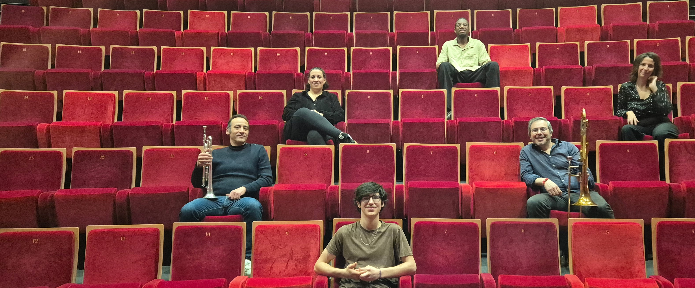
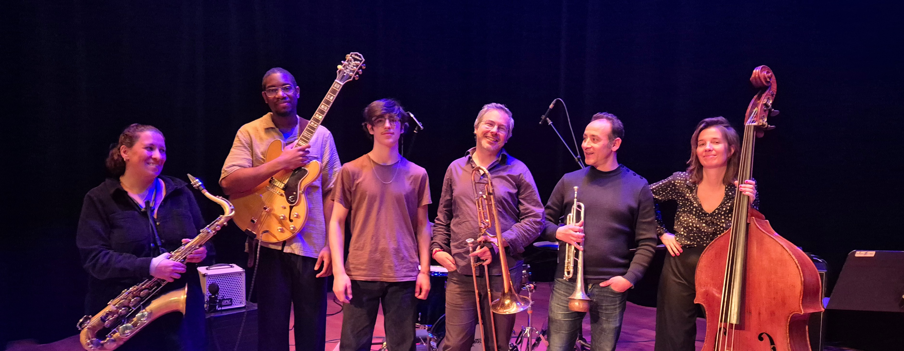
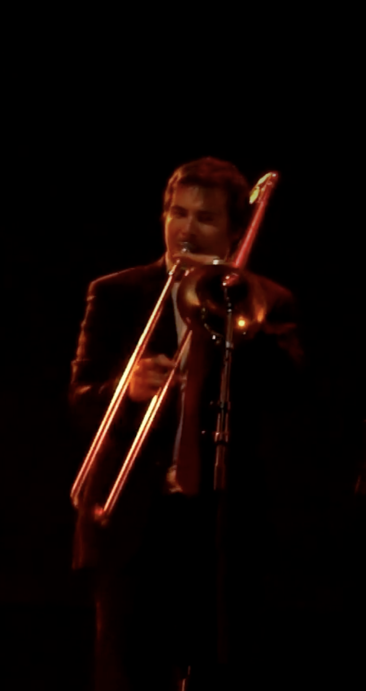
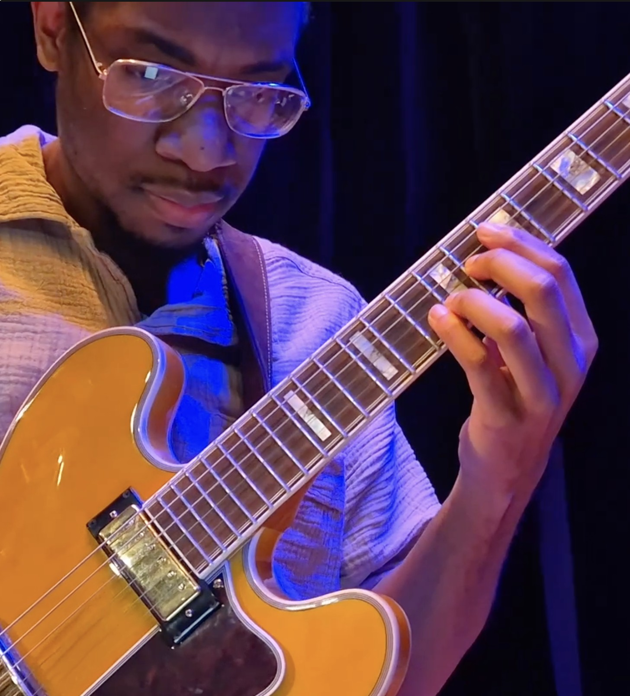
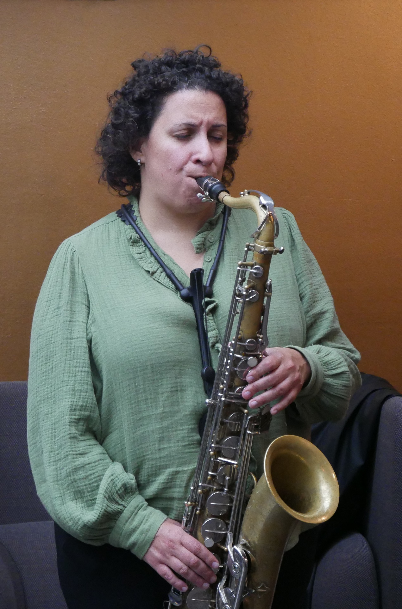
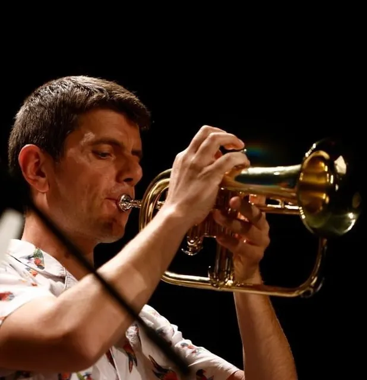
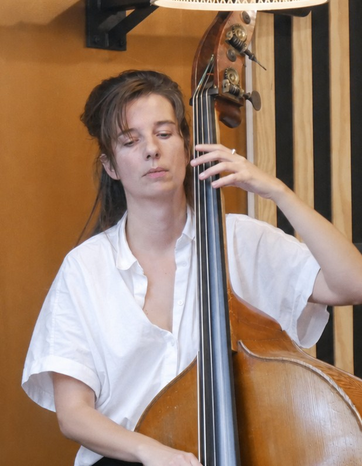
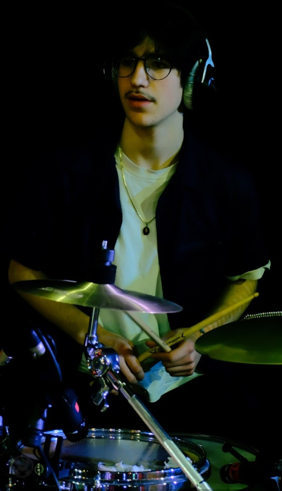

Bourg-la-Reine, 2026
Decadent Bop Sextet est né d’un désir simple : rejouer une musique que l’on dit passée, sans nostalgie ni reconstitution. Le projet s’inscrit dans la continuité du hard bop et du post-bop, en conservant leur langage, leur énergie et leur frontalité, tout en assumant pleinement le décalage temporel.
Sous l’impulsion du tromboniste et compositeur Julien Rachedi, le sextet développe un répertoire original. L’écriture y tient une place importante, tout en laissant une large place à l’improvisation et à l’interaction entre les musiciens. Les formes restent ouvertes et évolutives, au service du jeu collectif. L’instrumentation — trompette, trombone, saxophone ténor, guitare, contrebasse et batterie — permet de travailler différentes configurations, du jeu en petite formation à des passages plus denses proches d’un tutti. Elle offre une palette sonore à la fois structurée et mobile.
Le groupe réunit des musiciens de générations différentes, de 16 à 45 ans. Cette diversité se retrouve dans les approches du tempo, du phrasé et de l’écoute, et participe à la construction du son d’ensemble.
La musique qui en résulte est vivante, incarnée, et volontairement “hors de son temps”, comme si le bop continuait d’évoluer en parallèle de l’histoire officielle.

Trombone · Composition
Né à Paris en 1982, Julien Rachedi est multi-instrumentiste. Il débute la musique par une formation classique au piano et au saxophone, avant de poursuivre un apprentissage plus libre avec la guitare électrique. En 1998, il se tourne vers le trombone, qu’il apprend en autodidacte et qui devient son instrument principal.
Il participe depuis à de nombreuses formations, sur scène comme dans l’espace public, avec plusieurs centaines de concerts dans des esthétiques issues des musiques afro-américaines et latines. Il joue notamment dans des contextes variés, de la parade d’Halloween de New York au Manapany Surf Festival à La Réunion, en passant par Jazz à Tanger.
La composition occupe une place importante dans son parcours. Dès ses premiers groupes de rock, il écrit ses propres morceaux, puis poursuit ce travail au sein de ses projets (Ouiches Lorenes, Batunga) et dans des productions électroniques.
Son jeu de trombone, avant tout initié par les second line du Rebirth Brass Band, puis par la découverte des maîtres JJ Johnson et Curtis Fuller, se dirige vite du coté des sons puissants de Roswell Rudd, Gary Valente ou Barry Rogers. L’influence de la guitare reste également présente dans son jeu, nourrie par l’écoute de musiciens comme Jimi Hendrix, David Gilmour ou Prince, avec une attention constante portée à la clarté du discours musical et à la simplicité des idées mélodiques.
Longtemps inscrit dans des esthétiques proches du jazz sans formation académique spécifique, il prend un tournant décisif en 2021 lors de sa rencontre avec Eric Schultz. Ce contact marque une réorientation vers un travail plus approfondi du jazz. Il reprend alors un parcours au conservatoire, ainsi que des cours de trombone classique avec Stéphane Guilleux, afin de structurer sa pratique, et prépare un DEM jazz.
Aujourd’hui, il développe son projet artistique en tant que leader, avec une attention particulière portée à l’écriture, au son collectif et à la construction d’un langage musical personnel.

Guitare
Jérémy Akome Afane commence la guitare il y a une quinzaine d’années avec une formation classique. Il intègre ensuite le conservatoire de Bourg-la-Reine, où il suit un cursus classique jusqu’en DEM, avant de s’orienter vers le jazz.
Il débute le jazz au conservatoire d’Antony, puis poursuit sa formation avec Vincent Jacqz et entre en DEM jazz en 2024. Il participe régulièrement à des jam sessions et se produit dans des bars et restaurants.
Parallèlement, il enseigne la guitare depuis plusieurs années, en cours particuliers puis au conservatoire de Bourg-la-Reine.
Il joue différents styles : classique, jazz, musiques brésiliennes (bossa nova, choro, samba) et musiques actuelles. Parmi ses influences figurent Heitor Villa-Lobos, Johann Sebastian Bach, Joe Pass, Pat Metheny et Grant Green.

Saxophone ténor
Cécile Siboni commence la musique par le chant avant de se tourner vers le saxophone en autodidacte. Elle poursuit ensuite sa formation en jazz et musiques improvisées aux conservatoires de Brest et de Bourg-la-Reine.
Son parcours l’amène à explorer différents styles : jazz, funk, musiques afro-cubaines, afrobeat et improvisation libre. Elle développe une pratique mêlant travail du son, improvisation et composition.
Elle est influencée notamment par Stan Getz, Pharoah Sanders et Kenny Garrett.
Elle joue dans différentes formations, du petit ensemble au big band, et utilise également la voix dans ses projets. Elle compose et réalise des arrangements.

Trompette
Florent Hinschberger commence la trompette à 11 ans à l’harmonie municipale de Verdun. Il découvre rapidement le jazz et les musiques improvisées, notamment grâce à son entourage et aux ateliers du clarinettiste Xavier Charles. Après des études d’ingénieur et dix ans d’activité professionnelle, il se réoriente à 33 ans vers une carrière de musicien.
Il se forme au conservatoire du 10e arrondissement de Paris avec André Feydy, puis lors de séjours à New York avec Ralph Alessi. Il obtient un DEM jazz à l’EDIM (Cachan).
Il joue dans différents projets jazz (Itibere Orquestra Familia, Blue Tangerine, Nutz & Boltz…) et de musiques du monde (Labess, Ba Cissoko…). Il compose également pour le théâtre, le documentaire (ARTE, Disney+) et le spectacle de rue.
Depuis 2012, il dirige le Big EDIM Band. Il enseigne la trompette au conservatoire du 10e arrondissement de Paris, où il encadre aussi des ensembles. Il s’est produit dans de nombreux festivals et salles en France et à l’étranger.

Contrebasse
Jessica Dalle est comédienne, metteuse en scène et musicienne. Diplômée du Conservatoire National d’Art dramatique en 2013, elle développe un travail à la croisée du théâtre et de la musique. Elle est artiste associée au Théâtre de la Cité internationale entre 2016 et 2018.
Depuis 2018, elle travaille avec le metteur en scène Benjamin Lazar au sein de la compagnie L’incrédule. Elle participe à plusieurs créations mêlant texte et musique, notamment autour de Lautréamont et Leonora Carrington.
Parallèlement, elle se forme à la musique. Issue d’une famille de musiciens, elle débute par le piano et le chant au conservatoire de Courbevoie. Elle s’oriente ensuite vers le jazz, se forme au chant et participe à de nombreuses jam sessions.
Elle commence la contrebasse au conservatoire de Bourg-la-Reine, où elle suit un cursus DEM jazz avec plusieurs enseignants. Elle joue aujourd’hui dans différents projets et développe ses propres compositions, tout en poursuivant son activité au théâtre.

Batterie
Rafael Delamare est batteur en formation au conservatoire. Il joue dans plusieurs groupes aux formations variées, du big band aux petits ensembles.
Il s’intéresse à différents styles, notamment le jazz, l’afrobeat et le funk. Sa pratique s’oriente autour du travail du rythme et du groove, ainsi que de l’écoute au sein du groupe.
Trois titres enregistrés live à l'auditorium du Conservatoire de Bourg-la-Reine, avec la participation de Julien Matrot à la trompette.
La formation de sextet à 3 soufflants est un terrain de jeu particulièrement fertile pour les réjouissances du jazzman : elle permet d'articuler de façon fluide les formes écrites et improvisées ; d'assurer des passages en trio ou quartet, évoquant des formations réduites et des contextes plus intimistes, ou à l'inverse de développer une puissance et une richesse sonore se rapprochant de l’esthétique des big bands.
On peut citer bien sûr l’album Kind of Blue de Miles Davis avec John Coltrane et Cannonball Adderley, mais aussi les travaux des Jazz Messengers dans les années 60, ou encore le Jazztet de Benny Golson et Art Farmer comme références en la matière.
Si le trio rythmique a avant tout vocation à assurer une base solide, il peut aussi être ponctuellement remplacé par les trois voix de soufflants, en nombre suffisant pour suggérer un contexte harmonique. Mais représenter ce contexte reste délicat : le jazz repose sur une harmonie à quatre voix. Avec quatre soufflants, on peut répartir fondamentale, tierce, quinte et septième. À deux, la tierce et la septième suffisent souvent à suggérer l’accord. À trois, l’équilibre devient plus instable : l’ajout d’une troisième voix vient perturber la structure forte tierce/septième sans permettre de restituer l’ensemble.
Il faut donc traiter chaque situation au cas par cas, en écoutant note par note. Le mouvement des voix doit rester fluide, et il faut être attentif aux structures fortes comme les triades ou les empilements de quartes, qui peuvent modifier sensiblement la perception d’un passage. La densité joue aussi un rôle important, selon qu’une voix est jouée à l’unisson, à l’octave, ou répartie entre plusieurs instruments.
Par exemple, dans Jamais trop loin, la trompette porte la ligne principale tandis que les autres soufflants installent le contexte harmonique en valeurs longues sur la tierce et la septième. Sur certaines notes tenues, une structure à trois voix apparaît et modifie le relief perçu.
Dans Pellet tank blues, le trombone expose d’abord seul le thème, puis la trompette le rejoint à l’octave, ce qui densifie progressivement le discours avant une dernière section harmonisée.
Enfin, dans le tutti de fin de All reasons given, l’écriture alterne entre unissons/octaves et accords ponctuels sur des notes accentuées. Ces variations de densité et de dynamique rappellent volontairement le jeu de la batterie, dans une musique où le rythme reste central.
Au final, écrire pour trois soufflants revient moins à appliquer des règles fixes qu’à chercher en permanence un équilibre entre clarté, mouvement et couleur. C’est aussi un terrain propice pour jouer avec les contrastes : entre densité et transparence, unisson et harmonie, tension et relâchement. C’est précisément cet espace de contraintes et de liberté qui nourrit notre écriture et façonne l’identité sonore du groupe.
— Aucune date programmée pour le moment —
Laissez votre email pour être prévenu·e dès qu'une date est annoncée.
✓ Inscrit·e. On vous tient au courant.
Booking, presse, collaboration artistique ou prise de contact — utilisez le formulaire ou écrivez directement.